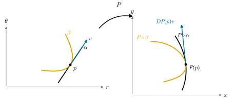

2.2 The Chain Rule and Higher Derivatives
Goals
- chain rule \(D(G \circ F)(p) = DG(F(p))\,DF(p)\)를 증명하고, 그 좌표 형태로 합성함수의 partial derivative를 계산할 수 있다.
- total derivative를 곡선의 속도로 계산하는 방법(\(DF(p)v = (F \circ \alpha)'(0)\))을 쓸 수 있다.
- \(C^k\)급 map과 smooth map을 정의하고, partial derivative의 교환(\(\partial_i\partial_j f = \partial_j\partial_i f\))과 mean value inequality를 증명할 수 있다.
- 적분 나머지를 갖는 Taylor's theorem을 진술하고, 한 점 근처에서 함수를 2차식으로 근사할 수 있다.
Prerequisites
- Definition 2.1.1 (total derivative), Theorem 2.1.11 (total derivative and Jacobian matrix), Theorem 2.1.13 (continuous partial derivatives imply differentiable)
- Lemma 2.1.6 (componentwise criterion), Proposition 2.1.7, Example 2.1.4 (inner product and scalar product)
- Example 2.1.14 (polar coordinate map)
- Theorem 1.2.16 (composition and matrix multiplication)
- 1변수 미적분: mean value theorem, 미적분의 기본정리, 부분적분
Motivation
Section 2.1에서 map의 total derivative를 linear approximation으로 정의하고 partial derivative로 계산했다. 미분기하에서는 map을 거의 언제나 합성해서 쓴다. 곡선 \(\alpha\)를 map \(F\)로 옮긴 곡선 \(F \circ \alpha\), parametrization을 바꾼 surface, 좌표를 바꾼 함수가 모두 합성이다. 그러면 합성의 total derivative는 무엇인가? “linear approximation의 합성은 합성의 linear approximation”일 것이라 기대할 수 있다. linear map의 합성은 행렬의 곱이므로(Theorem 1.2.16), 기대하는 공식은 \(D(G \circ F)(p) = DG(F(p))\,DF(p)\)이다. 이것이 chain rule이다.
이 절의 후반에서는 미분을 거듭한다. partial derivative의 partial derivative가 있고 연속이면 무엇을 얻는가? 두 번 미분하는 순서가 중요한가? 그리고 1차 근사(total derivative) 다음으로 2차, 3차 근사가 어떻게 이어지는가(Taylor's theorem)? 이 도구들이 모두 뒤의 장에서 쓰인다.

The chain rule
Theorem 2.2.1 (chain rule). \(U \subseteq \R^n\)과 \(V \subseteq \R^m\)이 open set이고 \(F\colon U \to \R^m\), \(G\colon V \to \R^k\), \(F(U) \subseteq V\)라 하자. \(F\)가 \(p\)에서 미분가능하고 \(G\)가 \(F(p)\)에서 미분가능하면 \(G \circ F\)는 \(p\)에서 미분가능하고
\[ D(G \circ F)(p) = DG(F(p)) \circ DF(p) \]
이다. 좌표 \(x = (x^1, \dots, x^n)\), \(y = (y^1, \dots, y^m)\)으로 쓰면
이다.
이 정리가 말하는 것. 합성의 linear approximation은 linear approximation의 합성이다. 행렬로는 \(k \times n\) 행렬 \(D(G \circ F)(p)\)가 \(k \times m\) 행렬 \(DG(F(p))\)와 \(m \times n\) 행렬 \(DF(p)\)의 곱이다.
Proof idea: \(F\)의 나머지와 \(G\)의 나머지를 각각 써서 합성의 나머지를 두 부분으로 나눈다. \(G\)의 나머지에 들어가는 증분 \(F(p + h) - F(p)\)가 \(\abs{h}\)의 상수배로 억제된다는 것이 핵심이다.
Proof. \(q = F(p)\), \(A = DF(p)\), \(B = DG(q)\)라 하고 나머지를 \(R_F(h) = F(p + h) - F(p) - Ah\), \(R_G(k) = G(q + k) - G(q) - Bk\)로 두자. \(k \neq 0\)이면 \(\sigma(k) = \abs{R_G(k)}/\abs{k}\), \(k = 0\)이면 \(\sigma(0) = 0\)으로 정하면, \(G\)의 미분가능성은 \(\lim_{k \to 0}\sigma(k) = 0 = \sigma(0)\)이라는 뜻이고, \(R_G(0) = 0\)이므로 모든 \(k\)에 대하여 \(\abs{R_G(k)} = \sigma(k)\abs{k}\)이다.
증분 \(k(h) = F(p + h) - F(p) = Ah + R_F(h)\)를 쓰면
\[ \begin{aligned} G(F(p + h)) - G(F(p)) - BAh &= \big(G(q + k(h)) - G(q) - Bk(h)\big) + B\big(k(h) - Ah\big) \\ &= R_G(k(h)) + B R_F(h) \end{aligned} \]
이다. \(BA\)는 linear map이므로 우변을 \(\abs{h}\)로 나눈 것이 \(0\)으로 감을 보이면 된다.
- 둘째 항: Proposition 1.5.7의 상수 \(C_B\)로 \(\abs{BR_F(h)}/\abs{h} \le C_B\abs{R_F(h)}/\abs{h} \to 0\)이다.
- 첫째 항: Proposition 1.5.7의 상수 \(C_A\)로 \(\abs{k(h)} \le C_A\abs{h} + \abs{R_F(h)}\)이므로 \[ \frac{\abs{R_G(k(h))}}{\abs{h}} = \sigma(k(h))\,\frac{\abs{k(h)}}{\abs{h}} \le \sigma(k(h))\Big(C_A + \frac{\abs{R_F(h)}}{\abs{h}}\Big) \] 이다. \(h \to 0\)이면 괄호 안은 \(C_A\)로 가고, Proposition 2.1.7에 의해 \(F\)가 \(p\)에서 연속이므로 \(k(h) \to 0\)이며, \(\sigma\)가 \(0\)에서 연속이므로 \(\sigma(k(h)) \to 0\)이다. 따라서 첫째 항도 \(0\)으로 간다.
그러므로 \(G \circ F\)는 \(p\)에서 미분가능하고 \(D(G \circ F)(p) = BA\)이다. Theorem 2.1.11(b)에 의해 세 total derivative의 행렬은 Jacobian matrix이고, Theorem 1.2.16에 의해 합성의 행렬은 행렬의 곱이다. 곱의 \((i, j)\) 성분을 쓰면 (2.2.1)이다.
\(n = 1\)이면 \(F\)는 곡선이 된다. 이 경우를 따로 적어 두자. total derivative를 곡선의 속도로 계산할 수 있다는 뜻이다.
Corollary 2.2.2 (computing the total derivative along curves). \(F\colon U \to \R^m\)이 \(p\)에서 미분가능하고, \(I\)가 열린구간이며 곡선 \(\alpha\colon I \to U\)가 \(t_0\)에서 미분가능하고 \(\alpha(t_0) = p\), \(\alpha'(t_0) = v\)라 하자. 그러면
\[ (F \circ \alpha)'(t_0) = DF(p)\,v \]
이다. 특히 \(DF(p)v\)는 \(p\)를 속도 \(v\)로 지나는 곡선을 어떻게 고르든 같은 값으로 계산된다. 그런 곡선은 늘 있다. 예를 들어 \(B_r(p) \subseteq U\)이면 \(\alpha(t) = p + tv\) (\(\abs{t}\abs{v} \lt r\))가 그런 곡선이다.
Proof. Section 2.1에서 본 대로 \(D\alpha(t_0)\)는 열벡터 \(\alpha'(t_0) = v\)이다. Theorem 2.2.1에서 \(D(F \circ \alpha)(t_0) = DF(p)\,D\alpha(t_0)\)이고, 양변을 \(m \times 1\) 행렬, 즉 벡터로 읽으면 \((F \circ \alpha)'(t_0) = DF(p)v\)이다.
계산 기법이 처음 나오는 곳이므로, 이 장의 기준 map으로 (2.2.1)을 단계마다 써 보자.
Example 2.2.3 (partial derivatives of a function written in polar coordinates). \(f\colon \R^2 \to \R\)이 미분가능하고 \(g = f \circ P\), 즉 \(g(r, \theta) = f(r\cos\theta,\ r\sin\theta)\)라 하자. chain rule에서 \(Dg(r, \theta) = Df(P(r, \theta))\,DP(r, \theta)\)이고, \(Df\)는 \(1 \times 2\) 행렬 \((\partial_x f\ \ \partial_y f)\), \(DP\)는 (2.1.5)이므로
\[ \big(\partial_r g\ \ \ \partial_\theta g\big) = \big(\partial_x f\ \ \ \partial_y f\big)\begin{pmatrix} \cos\theta & -r\sin\theta \\ \sin\theta & r\cos\theta \end{pmatrix} \]
이다. 행렬을 곱하면
이다. 여기서 \(f\)의 partial derivative는 모두 점 \(P(r, \theta)\)에서 계산한다. 두 함수로 확인하자.
- \(f(x, y) = x^2 + y^2\)이면 \(g(r, \theta) = r^2\)이다. (2.2.2)에 \(\partial_x f = 2x = 2r\cos\theta\), \(\partial_y f = 2y = 2r\sin\theta\)를 넣으면 \(\partial_r g = 2r\cos^2\theta + 2r\sin^2\theta = 2r\)이고 \(\partial_\theta g = -2r^2\sin\theta\cos\theta + 2r^2\cos\theta\sin\theta = 0\)이다. \(g = r^2\)을 직접 미분한 값과 같다.
- \(f(x, y) = xy\)이면 \(g = r^2\cos\theta\sin\theta = \tfrac12 r^2\sin 2\theta\)이다. \(\partial_x f = y\), \(\partial_y f = x\)를 넣으면 \(\partial_\theta g = -r\sin\theta \cdot r\sin\theta + r\cos\theta \cdot r\cos\theta = r^2(\cos^2\theta - \sin^2\theta) = r^2\cos 2\theta\)이고, \(\tfrac12 r^2\sin 2\theta\)를 \(\theta\)로 미분한 값과 같다.
Verification: verify/v-2-2-chain-rule.py
Example 2.2.4 (reparametrization of a curve). \(\gamma\colon I \to \R^m\)과 \(h\colon J \to I\)가 미분가능하면(\(I, J\)는 열린구간) Corollary 2.2.2에서 \((\gamma \circ h)'(s) = D\gamma(h(s))\,h'(s) = h'(s)\,\gamma'(h(s))\)이다. 1변수 chain rule의 벡터판이다. helix \(\gamma(t) = (a\cos t,\ a\sin t,\ bt)\)에서 \(c = \sqrt{a^2 + b^2}\), \(h(s) = s/c\)로 두면 \(\abs{(\gamma \circ h)'(s)} = \tfrac1c\abs{\gamma'(s/c)} = \tfrac1c\sqrt{a^2 + b^2} = 1\)이다(Example 2.1.15). 즉 \(\gamma \circ h\)는 같은 helix를 빠르기 \(1\)로 지난다. 이런 reparametrization은 Section 4.3에서 arc length parametrization으로 다시 다룬다(Example 4.3.10).
합과 곱의 미분법도 chain rule에서 한꺼번에 나온다. Example 2.1.4의 bilinear map에 chain rule을 쓰면 된다.
Proposition 2.2.5 (derivative of sums and products). \(F, G\colon U \to \R^m\)과 \(f\colon U \to \R\)가 \(p\)에서 미분가능하고 \(c \in \R\)이라 하자. 그러면 \(F + G\), \(cF\), \(fG\), \(\inner{F}{G}\)는 \(p\)에서 미분가능하고, 모든 \(h \in \R^n\)에 대하여
- (a) \(D(F + G)(p) = DF(p) + DG(p)\), \(D(cF)(p) = c\,DF(p)\)
- (b) \(D(fG)(p)h = \big(Df(p)h\big)\,G(p) + f(p)\,DG(p)h\)
- (c) \(D\inner{F}{G}(p)h = \inner{DF(p)h}{G(p)} + \inner{F(p)}{DG(p)h}\)
이다. 특히 곡선 \(\alpha, \beta\colon I \to \R^m\)이 미분가능하면
이다.
Proof. Lemma 2.1.6에 의해 \(\Phi = (F, G)\colon U \to \R^m \times \R^m\)은 \(p\)에서 미분가능하고 \(D\Phi(p)h = (DF(p)h,\ DG(p)h)\)이다. (c) \(\inner{F}{G} = \beta \circ \Phi\), \(\beta(y, z) = \inner{y}{z}\)이다. Example 2.1.4(b)의 \(D\beta(y, z)(k, l) = \inner{k}{z} + \inner{y}{l}\)과 chain rule에서 \(D\inner{F}{G}(p)h = D\beta(\Phi(p))\big(D\Phi(p)h\big) = \inner{DF(p)h}{G(p)} + \inner{F(p)}{DG(p)h}\)이다. (b) \(fG = \mu \circ (f, G)\), \(\mu(s, z) = sz\)이고 Example 2.1.4(c)를 같은 방식으로 쓴다. (a) 덧셈 \((y, z) \mapsto y + z\)와 \(y \mapsto cy\)는 linear map이므로 total derivative가 자기 자신이다(Example 2.1.3(a)). chain rule을 쓰면 된다. (2.2.3)은 (c)에서 \(n = 1\), \(h = 1\)로 둔 것이다.
Example 2.2.6 (curves on the sphere). 곡선 \(\gamma\colon I \to \R^3\)이 미분가능하고 모든 \(t\)에서 \(\abs{\gamma(t)} = r\)이라 하자. 즉 \(\gamma\)는 반지름 \(r\)인 sphere 위에 있다. (2.2.3)에서 \(0 = (r^2)' = \inner{\gamma}{\gamma}'(t) = 2\inner{\gamma(t)}{\gamma'(t)}\)이다. 따라서 sphere 위 곡선의 속도는 언제나 위치벡터에 수직이다. 예를 들어 colatitude \(\theta_0\)인 circle of latitude \(\gamma(t) = \mathbf{x}(\theta_0, t) = (r\sin\theta_0\cos t,\ r\sin\theta_0\sin t,\ r\cos\theta_0)\)에서는 \(\gamma'(t) = (-r\sin\theta_0\sin t,\ r\sin\theta_0\cos t,\ 0)\)이고 \(\inner{\gamma}{\gamma'} = -r^2\sin^2\theta_0\cos t\sin t + r^2\sin^2\theta_0\sin t\cos t + 0 = 0\)이다. 거꾸로 열린구간 \(I\)에서 늘 \(\inner{\gamma}{\gamma'} = 0\)이면 \(\abs{\gamma}^2\)의 도함수가 \(0\)이므로 1변수 mean value theorem에 의해 \(\abs{\gamma}\)는 상수다.
Verification: verify/v-2-2-chain-rule.py
The mean value inequality
1변수 mean value theorem은 \(f(b) - f(a) = f'(\xi)(b - a)\)인 \(\xi\)가 있다고 말한다. 값이 벡터인 map에서는 이 등식이 성립하지 않지만(Non-example 2.2.9), “변화량은 미분의 크기 곱하기 거리 이하”라는 부등식은 남는다. 미분의 크기를 재려면 linear map의 크기가 필요하다.
Definition 2.2.7 (operator norm). linear map \(A\colon \R^n \to \R^m\)에 대하여 \[ \norm{A} = \sup\{\abs{Av} : v \in \R^n,\ \abs{v} \le 1\} \] 를 \(A\)의 operator norm(작용소 노름)이라 한다.
Proposition 1.5.7에 의해 \(\abs{v} \le 1\)이면 \(\abs{Av} \le C\)이므로 \(\norm{A} \le C \lt \infty\)이다. 또 \(v \neq 0\)이면 \(v/\abs{v}\)의 길이가 \(1\)이므로 \(\abs{Av} = \abs{v}\,\abs{A(v/\abs{v})} \le \norm{A}\abs{v}\)이고, 이 부등식은 \(v = 0\)에서도 성립한다. 즉 \(\norm{A}\)는 “\(A\)가 벡터를 최대 몇 배로 늘이는가”이다. 예: identity map은 \(\norm{\id} = 1\)이다. 회전 \(R_\alpha\)(Example 1.2.2(e))는 \(\abs{R_\alpha v}^2 = (v^1\cos\alpha - v^2\sin\alpha)^2 + (v^1\sin\alpha + v^2\cos\alpha)^2 = \abs{v}^2\)이므로 \(\norm{R_\alpha} = 1\)이다. 대각행렬 \(\diag(a, b)\)는 \(\abs{(av^1, bv^2)} \le \max(\abs a, \abs b)\abs{v}\)이고 \(e_1\) 또는 \(e_2\)에서 등호이므로 norm이 \(\max(\abs a, \abs b)\)이다. Proposition 1.5.7의 상수 \(C\)는 일반적으로 \(\norm{A}\)가 아니다. \(\R^2\)의 identity map에서 \(C = \sqrt2\)이지만 \(\norm{\id} = 1\)이다.
Proposition 2.2.8 (mean value inequality). \(F\colon U \to \R^m\)이 \(U\)에서 미분가능하고, \(a, b \in U\)를 잇는 선분 \(\{a + t(b - a) : 0 \le t \le 1\}\)이 \(U\)에 포함된다고 하자. 이 선분 위에서 \(\norm{DF(x)} \le M\)이면
이다.
Proof idea: 벡터 \(F(b) - F(a)\) 방향의 성분만 보면 실숫값 함수가 되어 1변수 mean value theorem을 쓸 수 있다.
Proof. \(F(b) = F(a)\)이면 할 것이 없으므로 \(u = F(b) - F(a) \neq 0\)이라 하자. \(U\)가 open set이므로 \(a\)와 \(b\) 둘레에 \(U\)에 포함되는 ball이 있고, 따라서 어떤 \(\delta \gt 0\)에 대해 \(t \in (-\delta, 1 + \delta)\)이면 \(a + t(b - a) \in U\)이다. 이 구간에서 \(g(t) = \inner{u}{F(a + t(b - a))}\)로 두면, Corollary 2.2.2와 Proposition 2.2.5(c)(\(u\)는 상수)에 의해 \(g\)는 미분가능하고 \(g'(t) = \inner{u}{DF(a + t(b - a))(b - a)}\)이다. 1변수 mean value theorem에서 어떤 \(c \in (0, 1)\)이 있어서 \(g(1) - g(0) = g'(c)\)이다. 좌변은 \(\inner{u}{F(b) - F(a)} = \abs{u}^2\)이고, 우변은 Cauchy–Schwarz inequality와 operator norm의 성질에 의해 \(\abs{g'(c)} \le \abs{u}\,\norm{DF(\xi)}\,\abs{b - a} \le \abs{u}\,M\abs{b - a}\)이다(\(\xi = a + c(b - a)\)). \(\abs{u}^2 \le \abs{u}M\abs{b - a}\)의 양변을 \(\abs{u} \gt 0\)으로 나누면 된다.
Non-example 2.2.9 (the mean value equality fails for vector-valued maps). 반지름 \(1\)인 원 \(\gamma(t) = (\cos t, \sin t)\)를 \([0, 2\pi]\)에서 보자. \(\gamma(2\pi) - \gamma(0) = 0\)이지만 모든 \(t\)에서 \(\gamma'(t) = (-\sin t, \cos t) \neq 0\)이므로 \(\gamma(2\pi) - \gamma(0) = \gamma'(\xi)(2\pi - 0)\)을 만족하는 \(\xi\)는 없다. 부등식 (2.2.4)는 \(0 \le 1 \cdot 2\pi\)로 성립한다.
Corollary 2.2.10. \(F\)가 ball \(B = B_r(p)\)에서 미분가능하고 모든 \(x \in B\)에서 \(DF(x) = 0\)이면 \(F\)는 \(B\)에서 상수다.
Proof. \(a, b \in B\)이고 \(0 \le t \le 1\)이면 triangle inequality에서 \(\abs{a + t(b - a) - p} = \abs{(1 - t)(a - p) + t(b - p)} \le (1 - t)\abs{a - p} + t\abs{b - p} \lt r\)이므로 선분이 \(B\)에 포함된다. Proposition 2.2.8을 \(M = 0\)으로 쓰면 \(F(b) = F(a)\)이다.
ball이라는 가정을 그냥 빼면 결론이 거짓이다. 서로 떨어진 두 ball의 합집합에서 두 ball에 서로 다른 상수값을 주면 \(DF = 0\)이지만 \(F\)는 상수가 아니다. 그래도 Corollary 2.2.10에 의해, open set에서 \(DF = 0\)인 \(F\)는 각 점의 ball 모양 neighborhood에서 상수, 즉 locally constant이다.
Higher derivatives and smooth maps
partial derivative \(\partial_j F^i\)는 다시 \(U\) 위의 함수이므로, 존재한다면 또 partial derivative를 취할 수 있다. \(\partial_i(\partial_j f)\)를 \(\partial_i\partial_j f\) 또는 \(\dfrac{\partial^2 f}{\partial x^i\,\partial x^j}\)로 쓴다. 오른쪽의 \(\partial_j\)를 먼저 적용한다.
Definition 2.2.11 (\(C^k\) maps, i.e., maps of class \(C^k\), and smooth maps). \(U \subseteq \R^n\)이 open set이고 \(F\colon U \to \R^m\)이라 하자. \(F\)가 연속이면 \(C^0\)급이라 한다. \(k \ge 1\)일 때, 모든 성분 \(F^i\)의 \(k\)계 이하의 partial derivative \(\partial_{j_1}\partial_{j_2}\cdots\partial_{j_l}F^i\) (\(1 \le l \le k\), 첨자는 임의)가 \(U\)의 모든 점에서 존재하고 \(U\)에서 연속이면 \(F\)를 of class \(C^k\)(\(C^k\)급)이라 한다. 모든 \(k\)에 대하여 \(C^k\)급이면 \(F\)를 \(C^\infty\)급 또는 smooth map(매끄러운 사상)이라 한다. \(U\) 위의 smooth real-valued function 전체의 집합을 \(C^\infty(U)\)로 쓴다.
정의에서 곧바로 다음을 알 수 있다. \(C^{k+1}\)급이면 \(C^k\)급이다. \(k \ge 1\)이면 \(F\)가 \(C^k\)급일 필요충분조건은 \(F\)가 \(C^1\)급이고 모든 \(\partial_j F\)가 \(C^{k-1}\)급인 것이다. Theorem 2.1.13에 의해 \(C^1\)급 map은 \(U\)에서 미분가능하고, 그 total derivative의 성분 \(\partial_j F^i\)는 연속이다. 이 study set에서 “smooth”는 언제나 \(C^\infty\)급을 뜻한다. 예를 들어 다항식으로 주어진 map, polar coordinate map \(P\), sphere의 standard parametrization \(\mathbf{x}\)는 매끄럽다. \(P\)의 partial derivative는 \(\cos\theta, \sin\theta\)에 \(r\)의 다항식을 곱한 꼴이고, 다시 partial derivative를 취해도 같은 꼴이 유지되기 때문이다. 더 일반적인 판정은 다음 명제가 준다.
Proposition 2.2.12 (operations on maps of class \(C^k\)). \(0 \le k \le \infty\)라 하자.
- (a) \(F, G\colon U \to \R^m\)과 \(f\colon U \to \R\)가 \(C^k\)급이면 \(F + G\), \(fG\), \(\inner{F}{G}\)는 \(C^k\)급이다.
- (b) \(F\colon U \to \R^m\), \(G\colon V \to \R^l\)가 \(C^k\)급이고 \(F(U) \subseteq V\)이면 \(G \circ F\)는 \(C^k\)급이다.
- (c) \(f\colon U \to \R\)가 \(C^k\)급이고 \(U\)에서 \(0\)이 되지 않으면 \(1/f\)는 \(C^k\)급이다.
Proof idea: 한 번 partial derivative를 취하면 곱의 미분법과 chain rule (2.2.1)에 의해 “\(C^{k-1}\)급 함수들의 합과 곱과 합성”이 된다. \(k\)에 대한 귀납법을 쓴다.
Proof. 유한한 \(k\)에 대해 보이면, 모든 \(k\)에 대해 성립하므로 \(k = \infty\)도 따라 나온다. \(k\)에 대한 귀납법을 쓴다. \(k = 0\)이면 연속함수의 합, 곱, 합성이 연속이라는 미적분학의 사실이다. \(k \ge 1\)이고 \(k - 1\)에서 (a), (b)가 성립한다고 하자.
(a) 성분마다 보면 된다. 1변수 곱의 미분법에서 \(\partial_j(fG^i) = (\partial_j f)G^i + f\,\partial_jG^i\)이고, 우변의 네 함수는 모두 \(C^{k-1}\)급이므로 귀납 가정에 의해 우변은 \(C^{k-1}\)급이다. \(fG\)는 연속이므로 \(fG\)는 \(C^k\)급이다. \(F + G\)와 \(\inner{F}{G} = \sum_i F^iG^i\)도 같다.
(b) \(F, G\)가 \(C^1\)급이므로 미분가능하고, (2.2.1)에 의해 \(\partial_j(G \circ F)^i = \sum_l \big((\partial_l G^i) \circ F\big)\,\partial_j F^l\)이다. \(\partial_l G^i\)와 \(F\)는 \(C^{k-1}\)급이므로 귀납 가정 (b)에 의해 \((\partial_l G^i) \circ F\)는 \(C^{k-1}\)급이고, \(\partial_j F^l\)도 \(C^{k-1}\)급이므로 귀납 가정 (a)에 의해 합과 곱이 \(C^{k-1}\)급이다. 따라서 \(G \circ F\)는 \(C^k\)급이다.
(c) \(\iota(t) = 1/t\)는 \(\R \setminus \{0\}\)에서 매끄럽다(\(\iota^{(k)}(t) = (-1)^k k!/t^{k+1}\)). \(1/f = \iota \circ f\)이므로 (b)에서 따라 나온다.
1변수 미적분에서 \(e^t\), \(\sin t\), \(\cos t\)는 \(\R\)에서, \(\log t\)와 \(\sqrt t\)는 \((0, \infty)\)에서 매끄럽다. Proposition 2.2.12와 합치면, 이런 함수들을 사칙연산과 합성으로 조합해 만든 map은 정의되는 open set에서 매끄럽다. 앞으로 이런 map이 매끄럽다는 것은 따로 말하지 않고 쓴다.
Non-example 2.2.13 (function of class \(C^1\) but not \(C^2\)). \(f(x) = x\abs{x}\)(\(\R \to \R\))를 보자. \(x \gt 0\)이면 \(f = x^2\), \(x \lt 0\)이면 \(f = -x^2\)이므로 \(x \neq 0\)에서 \(f'(x) = 2\abs{x}\)이다. \(x = 0\)에서는 \(f'(0) = \lim_{h \to 0} h\abs{h}/h = 0 = 2\abs{0}\)이다. \(f' = 2\abs{x}\)는 연속이므로 \(f\)는 \(C^1\)급이다. 그러나 \(f'\)은 Non-example 2.1.5에 의해 \(0\)에서 미분가능하지 않으므로 \(f\)는 \(C^2\)급이 아니다. 같은 방식으로 \(x^k\abs{x}\)는 \(C^k\)급이지만 \(C^{k+1}\)급이 아니다.
두 번 partial derivative를 취할 때 순서를 바꿔도 되는가? 연속성을 가정하면 된다.
Theorem 2.2.14 (symmetry of second derivatives). \(f\colon U \to \R\)가 \(C^2\)급이면 모든 \(i, j\)와 모든 \(p \in U\)에 대하여 \(\partial_i\partial_j f(p) = \partial_j\partial_i f(p)\)이다.
이 정리가 말하는 것. 먼저 \(x^j\) 방향으로, 다음에 \(x^i\) 방향으로 변화율을 재나, 순서를 바꾸어 재나 같다. 따라서 \(C^k\)급 함수의 \(k\)계 이하 partial derivative는 이웃한 두 partial derivative를 차례로 바꾸는 일을 되풀이하면 어떤 순서로도 옮길 수 있으므로, 미분하는 순서에 무관하다.
Proof idea: 작은 직사각형의 네 vertex에서 \(f\)의 값을 부호를 바꿔 가며 더한 양 \(\Delta\)는 \(i\)와 \(j\)에 대해 symmetric이다. mean value theorem을 두 가지 순서로 쓰면 \(\Delta\)가 두 가지 혼합 partial derivative로 각각 표현된다.
Proof. \(i = j\)이면 할 것이 없다. \(i \neq j\)라 하고 \(B_r(p) \subseteq U\)를 잡는다. \(0 \lt \abs{s}, \abs{t} \lt r/2\)일 때 \[ \Delta(s, t) = f(p + se_i + te_j) - f(p + se_i) - f(p + te_j) + f(p) \] 로 두자. 네 점은 \(p\)에서 거리 \(\abs{s} + \abs{t} \lt r\) 이내에 있다. \(t\)를 고정하고 \(u(\sigma) = f(p + \sigma e_i + te_j) - f(p + \sigma e_i)\)라 하면 \(\Delta = u(s) - u(0)\)이다. 1변수 mean value theorem에서 \(0\)과 \(s\) 사이의 어떤 \(\sigma_1\)에 대해 \(\Delta = s\,u'(\sigma_1) = s\big(\partial_i f(p + \sigma_1 e_i + te_j) - \partial_i f(p + \sigma_1 e_i)\big)\)이다. 괄호 안에 \(\tau \mapsto \partial_i f(p + \sigma_1 e_i + \tau e_j)\)에 대한 mean value theorem을 다시 쓰면, \(0\)과 \(t\) 사이의 어떤 \(\tau_1\)에 대해 \(\Delta = st\,\partial_j\partial_i f(p + \sigma_1 e_i + \tau_1 e_j)\)이다. 역할을 바꾸어 먼저 \(t\) 방향으로 mean value theorem을 쓰면 같은 방식으로 \(\Delta = st\,\partial_i\partial_j f(p + \sigma_2 e_i + \tau_2 e_j)\)인 \(\sigma_2, \tau_2\)가 있다. 두 식을 \(st \neq 0\)으로 나누면
\[ \partial_j\partial_i f(p + \sigma_1 e_i + \tau_1 e_j) = \partial_i\partial_j f(p + \sigma_2 e_i + \tau_2 e_j) \]
이다. \((s, t) \to 0\)이면 두 점 모두 \(p\)로 가고, 두 혼합 partial derivative는 \(p\)에서 연속이므로 \(\partial_j\partial_i f(p) = \partial_i\partial_j f(p)\)이다.
Non-example 2.2.15 (without continuity the order matters). \(f(x, y) = \dfrac{xy(x^2 - y^2)}{x^2 + y^2}\) (\((x, y) \neq 0\)), \(f(0, 0) = 0\)이라 하자. \(y \neq 0\)이면 \[ \partial_x f(0, y) = \lim_{h \to 0} \frac{f(h, y) - f(0, y)}{h} = \lim_{h \to 0} \frac{y(h^2 - y^2)}{h^2 + y^2} = -y \] 이고, \(f(h, 0) = 0\)이므로 \(\partial_x f(0, 0) = 0\)이다. 따라서 모든 \(y\)에서 \(\partial_x f(0, y) = -y\)이고 \(\partial_y\partial_x f(0, 0) = -1\)이다. 같은 계산으로 \(\partial_y f(x, 0) = x\)이므로 \(\partial_x\partial_y f(0, 0) = 1\)이다. 두 혼합 partial derivative가 다르다. 이 \(f\)는 \(C^1\)급이지만 혼합 partial derivative가 원점에서 연속이 아니어서 Theorem 2.2.14의 가정을 만족하지 않는다.
Verification: verify/v-2-2-chain-rule.py
Taylor's theorem
total derivative는 1차 근사다. 함수가 여러 번 미분가능하면 2차, 3차 근사로 나아갈 수 있다. 여러 변수의 경우는 선분 위로 제한해 1변수 경우로 줄인다. 먼저 1변수 경우를 나머지 항까지 정확히 적는다.
Lemma 2.2.16 (one-variable Taylor's theorem with integral remainder). \(J\)가 \(0\)을 포함하는 열린구간이고 \(g\colon J \to \R\)가 \(C^{k+1}\)급이면, 모든 \(t \in J\)에 대하여 \[ g(t) = \sum_{j=0}^{k} \frac{g^{(j)}(0)}{j!}\,t^j + \frac{1}{k!}\int_0^t (t - s)^k\,g^{(k+1)}(s)\,ds \] 이다.
Proof. \(k\)에 대한 귀납법을 쓴다. \(k = 0\)이면 미적분의 기본정리 \(g(t) = g(0) + \int_0^t g'(s)\,ds\)이다. \(k\)에서 성립하고 \(g\)가 \(C^{k+2}\)급이라 하자. 나머지 항을 부분적분하면(\(u = g^{(k+1)}(s)\), \(dv = (t - s)^k ds/k!\), \(v = -(t - s)^{k+1}/(k+1)!\))
\[ \begin{aligned} \frac{1}{k!}\int_0^t (t - s)^k g^{(k+1)}(s)\,ds &= \Big[-\frac{(t - s)^{k+1}}{(k+1)!}g^{(k+1)}(s)\Big]_{s=0}^{s=t} \\ &\quad + \frac{1}{(k+1)!}\int_0^t (t - s)^{k+1}g^{(k+2)}(s)\,ds \end{aligned} \]
이고, 경계항은 \(\dfrac{t^{k+1}}{(k+1)!}g^{(k+1)}(0)\)이다. 이것을 넣으면 \(k + 1\)에 대한 식이 된다.
Theorem 2.2.17 (Taylor's theorem). \(f\colon U \to \R\)가 \(C^{k+1}\)급이고, \(p \in U\)와 \(h \in \R^n\)에 대해 선분 \(\{p + th : 0 \le t \le 1\}\)이 \(U\)에 포함된다고 하자. 그러면
이고(\(j = 0\)인 항은 \(f(p)\)), 나머지는
\[ R_k(h) = \frac{1}{k!}\int_0^1 (1 - t)^k \sum_{i_1, \dots, i_{k+1} = 1}^{n} \partial_{i_1}\cdots\partial_{i_{k+1}}f(p + th)\,h^{i_1}\cdots h^{i_{k+1}}\,dt \]
이다. 특히 선분 위에서 모든 \((k+1)\)계 partial derivative의 절댓값이 \(M\) 이하이면 \(\abs{R_k(h)} \le \dfrac{M n^{k+1}}{(k+1)!}\abs{h}^{k+1}\)이다.
\(k = 2\)까지 풀어 쓰면 가장 자주 쓰는 모양이 된다.
1차항은 \(Df(p)h\)이고, 2차항은 symmetric matrix \(\big(\partial_i\partial_j f(p)\big)\)(Theorem 2.2.14)이 정하는 quadratic form이다.
Proof idea: \(g(t) = f(p + th)\)에 Lemma 2.2.16을 쓰고, \(g\)의 도함수를 chain rule로 계산한다.
Proof. \(U\)가 open set이므로 \(p\)와 \(p + h\) 둘레에 \(U\)에 포함되는 ball이 있고, 가정과 합치면 어떤 \(\delta \gt 0\)에 대해 \(t \in J = (-\delta, 1 + \delta)\)이면 \(p + th \in U\)이다. \(g(t) = f(p + th)\)(\(t \in J\))로 두자. 먼저 \(j \le k + 1\)이면
\[ g^{(j)}(t) = \sum_{i_1, \dots, i_j} \partial_{i_1}\cdots\partial_{i_j}f(p + th)\,h^{i_1}\cdots h^{i_j} \]
임을 \(j\)에 대한 귀납법으로 보인다. \(C^1\)급 함수 \(\psi\)에 대하여 Corollary 2.2.2(곡선 \(t \mapsto p + th\), 속도 \(h\))와 Theorem 2.1.11(b)에서 \(\frac{d}{dt}\psi(p + th) = D\psi(p + th)h = \sum_i \partial_i\psi(p + th)h^i\)이다. \(j = 1\)이면 \(\psi = f\)로 두면 된다. \(j\)에서 성립하고 \(j \lt k + 1\)이면 \(\psi = \partial_{i_1}\cdots\partial_{i_j}f\)는 \(C^1\)급이므로 각 항을 미분하면 \(\sum_{i}\partial_{i}\partial_{i_1}\cdots\partial_{i_j}f(p + th)h^{i}h^{i_1}\cdots h^{i_j}\)가 되고, 첨자 이름을 바꾸면 \(j + 1\)에 대한 식이다. 이로써 \(g\)가 \(C^{k+1}\)급이고 \(g^{(j)}(0)\)이 (2.2.5)의 \(j\)차 항의 \(j!\)배임을 알았다. Lemma 2.2.16을 \(t = 1\)에서 쓰면 (2.2.5)와 \(R_k(h) = \frac{1}{k!}\int_0^1 (1 - t)^k g^{(k+1)}(t)\,dt\)를 얻는다.
마지막 부등식: \(\abs{h^i} \le \abs{h}\)이고 합에는 \(n^{k+1}\)개의 항이 있으므로 \(\abs{g^{(k+1)}(t)} \le Mn^{k+1}\abs{h}^{k+1}\)이다. \(\int_0^1 (1 - t)^k\,dt = 1/(k+1)\)이므로 \(\abs{R_k(h)} \le \frac{1}{k!}\cdot\frac{1}{k+1}Mn^{k+1}\abs{h}^{k+1}\)이다.
Example 2.2.18 (sphere near the north pole). 반지름 \(r\)인 sphere \(x^2 + y^2 + z^2 = r^2\)의 윗부분 \(z \gt 0\)은 graph surface \(z = f(x, y)\), \(f(x, y) = \sqrt{r^2 - x^2 - y^2}\)이다(\(f\)는 disk \(B_r(0)\)에서 매끄럽다). 원점에서 2차까지 전개하자. chain rule로 \(\partial_x f = -x/f\), \(\partial_y f = -y/f\)이고, 한 번 더 미분하면(몫의 미분)
\[ \partial_x\partial_x f = -\frac1f - \frac{x^2}{f^3}, \qquad \partial_x\partial_y f = \partial_y\partial_x f = -\frac{xy}{f^3}, \qquad \partial_y\partial_y f = -\frac1f - \frac{y^2}{f^3} \]
이다. 원점에서 \(f = r\)이므로 \(\partial_x f = \partial_y f = 0\), \(\partial_x\partial_x f = \partial_y\partial_y f = -1/r\), \(\partial_x\partial_y f = 0\)이다. (2.2.6)에 넣으면 \(\abs{h} \le r/2\)에서
\[ f(h^1, h^2) = r - \frac{(h^1)^2 + (h^2)^2}{2r} + R_2(h), \qquad \abs{R_2(h)} \le C\abs{h}^3 \]
이다. 상수 \(C\)는 3계 partial derivative가 닫힌 disk \(\abs{x} \le r/2\)에서 bounded라는 사실에서 나온다. 닫힌 disk는 bounded인 closed set이고 3계 partial derivative는 그 위에서 연속이므로 bounded이다. 이것은 extreme value theorem으로, 미적분학에서 알려진 사실로 받아들인다(Section 2.1 Preliminaries. 증명은 Theorem 3.6.7과 Theorem 3.6.10). 즉 북극 근처에서 sphere는 paraboloid \(z = r - (x^2 + y^2)/(2r)\)과 2차까지 같다. 반지름이 작을수록 \(1/r\)이 커져 더 가파르게 휜다. 이 coefficient \(1/r\)은 Chapter 8에서 sphere의 curvature로 다시 나온다.
Verification: verify/v-2-2-chain-rule.py
1차 Taylor expansion에서 나머지를 적분 형태로 두면, 나머지의 coefficient도 smooth function으로 잡을 수 있다. 다음 따름정리는 Chapter 13에서 tangent vector를 derivation으로 정의할 때 핵심 도구가 된다.
Corollary 2.2.19 (first-order expansion with smooth coefficients). \(U \subseteq \R^n\)이 open set이고 \(p \in U\)이며, 모든 \(x \in U\)에 대하여 \(p\)와 \(x\)를 잇는 선분이 \(U\)에 포함된다고 하자(예: \(U\)가 \(p\)를 중심으로 하는 ball). \(f \in C^\infty(U)\)이면 smooth function \(g_1, \dots, g_n \in C^\infty(U)\)가 있어서
이다.
Proof. \(x \in U\)를 고정하자. Theorem 2.2.17의 증명과 같이 \(t \mapsto f(p + t(x - p))\)는 \(0\)과 \(1\)을 포함하는 열린구간에서 매끄럽고 도함수가 \(\sum_i \partial_i f(p + t(x - p))(x^i - p^i)\)이다. 미적분의 기본정리에서
\[ f(x) - f(p) = \int_0^1 \frac{d}{dt} f(p + t(x - p))\,dt = \sum_{i=1}^{n} (x^i - p^i)\int_0^1 \partial_i f(p + t(x - p))\,dt \]
이다. \(g_i(x) = \int_0^1 \partial_i f(p + t(x - p))\,dt\)로 두면 (2.2.7)이 성립하고, \(g_i(p) = \int_0^1 \partial_i f(p)\,dt = \partial_i f(p)\)이다. integrand \((x, t) \mapsto \partial_i f(p + t(x - p))\)는 \(U \times [0, 1]\)에서 모든 계의 partial derivative가 연속이다. 이런 함수를 \(t\)에 대해 적분한 것은 \(x\)에 대해 매끄럽고, 적분 기호 아래에서 partial derivative할 수 있다 (미적분학의 사실, [Sp-CoM Ch. 3], [Lee-ISM App. C]). 따라서 \(g_i \in C^\infty(U)\)이다.
Taylor's theorem은 나머지가 “작다”는 정리이지, Taylor polynomial이 차수를 높일수록 \(f\)로 수렴한다는 정리가 아니다. 다음 예가 그 차이를 극단적으로 보여 준다.
Example 2.2.20 (smooth function whose derivatives of all orders are \(0\)). \(f\colon \R \to \R\)을 \(t \gt 0\)이면 \(f(t) = e^{-1/t}\), \(t \le 0\)이면 \(f(t) = 0\)으로 정의하자. \(f\)는 매끄럽고 모든 \(k\)에 대하여 \(f^{(k)}(0) = 0\)이다. 따라서 \(0\)에서의 Taylor polynomial은 모두 영다항식이지만, \(t \gt 0\)에서 \(f(t) \gt 0\)이다.
Proof. 먼저 \(t \gt 0\)에서 \(f^{(k)}(t) = q_k(1/t)\,e^{-1/t}\)인 다항식 \(q_k\)가 있다. \(q_0 = 1\)이고, \(q_k\)가 있으면 \(\frac{d}{dt}\big(q_k(1/t)e^{-1/t}\big) = \big(-q_k'(1/t) + q_k(1/t)\big)t^{-2}e^{-1/t}\)이므로 \(q_{k+1}(s) = s^2\big(q_k(s) - q_k'(s)\big)\)로 두면 된다. 다음으로 모든 다항식 \(q\)에 대하여 \(\lim_{t \to 0^+} q(1/t)e^{-1/t} = \lim_{s \to \infty} q(s)e^{-s} = 0\)이다(지수함수가 모든 다항식보다 빨리 커진다). 이제 \(k\)에 대한 귀납법으로 \(f^{(k)}(0)\)이 존재하고 \(0\)이며 \(f^{(k)}\)가 \(0\)에서 연속임을 보이자. \(k = 0\)이면 \(f(t) \to 0\) (\(t \to 0^+\))에서 성립한다. \(k\)에서 성립하면 \(f^{(k+1)}(0) = \lim_{t \to 0} f^{(k)}(t)/t\)이고, 왼쪽 극한은 \(0\)(\(t \lt 0\)이면 \(f^{(k)}(t) = 0\)), 오른쪽 극한은 \(\lim_{t \to 0^+} (1/t)\,q_k(1/t)e^{-1/t} = 0\)이다. 또 \(f^{(k+1)}(t) = q_{k+1}(1/t)e^{-1/t} \to 0\) (\(t \to 0^+\))이므로 \(f^{(k+1)}\)은 \(0\)에서 연속이다. \(t \neq 0\)에서는 \(f\)가 분명히 매끄럽다(Proposition 2.2.12).
Verification: verify/v-2-2-chain-rule.py
Summary
- chain rule: \(D(G \circ F)(p) = DG(F(p))\,DF(p)\). 좌표로는 (2.2.1)이고, 곡선에 쓰면 \(DF(p)v = (F \circ \alpha)'(0)\)이다(Corollary 2.2.2).
- 합과 곱, inner product의 미분은 chain rule에서 나온다. 특히 \(\inner{\alpha}{\beta}' = \inner{\alpha'}{\beta} + \inner{\alpha}{\beta'}\)이고, sphere 위 곡선의 속도는 위치벡터에 수직이다.
- mean value inequality \(\abs{F(b) - F(a)} \le \sup\norm{DF}\,\abs{b - a}\)는 성립하지만 평균값 등식은 벡터값에서 성립하지 않는다.
- \(C^k\)급과 smooth(\(C^\infty\)) map은 합, 곱, 합성에 닫혀 있다. \(C^2\)급이면 혼합 partial derivative의 순서를 바꿀 수 있다(Theorem 2.2.14).
- Taylor's theorem (2.2.5)는 나머지를 적분으로 정확히 준다. 1차 전개의 coefficient를 매끄럽게 잡을 수 있다(Corollary 2.2.19). smooth function이라도 Taylor series가 함수를 결정하지 않을 수 있다.
다음 절에서는 total derivative \(DF(p)\)가 invertible이면 map \(F\) 자체가 \(p\) 근처에서 smooth inverse map을 가진다는 inverse function theorem을 다룬다. 한 점에서의 linear algebra가 neighborhood에서의 map의 모양을 결정한다는 첫 번째 정리다.
Exercises
Exercise 2.2.1 ★ \(f(x, y) = x^2y\)이고 \(g = f \circ P\)일 때, \(\partial_r g\)와 \(\partial_\theta g\)를 (i) \(g(r, \theta)\)를 직접 미분해서, (ii) (2.2.2)로 계산해서 비교하여라.
Solution
(i) \(g(r, \theta) = r^3\cos^2\theta\sin\theta\)이므로 \(\partial_r g = 3r^2\cos^2\theta\sin\theta\), \(\partial_\theta g = r^3(-2\cos\theta\sin^2\theta + \cos^3\theta)\)이다.
(ii) \(\partial_x f = 2xy = 2r^2\cos\theta\sin\theta\), \(\partial_y f = x^2 = r^2\cos^2\theta\)이다. (2.2.2)에서 \(\partial_r g = \cos\theta \cdot 2r^2\cos\theta\sin\theta + \sin\theta \cdot r^2\cos^2\theta = 3r^2\cos^2\theta\sin\theta\), \(\partial_\theta g = -r\sin\theta \cdot 2r^2\cos\theta\sin\theta + r\cos\theta \cdot r^2\cos^2\theta = -2r^3\cos\theta\sin^2\theta + r^3\cos^3\theta\)이다. 두 결과가 같다.
Verification: verify/v-2-2-chain-rule.py
Exercise 2.2.2 ★ \(\gamma\colon I \to \R^m\)이 \(C^2\)급이고 모든 \(t\)에서 \(\abs{\gamma'(t)} = c\)(상수)이면 \(\inner{\gamma'(t)}{\gamma''(t)} = 0\)임을 보여라. helix에서 직접 확인하여라.
Solution
(2.2.3)을 \(\alpha = \beta = \gamma'\)에 쓰면 \(0 = (c^2)' = \inner{\gamma'}{\gamma'}' = 2\inner{\gamma'}{\gamma''}\)이다. helix에서는 \(\gamma' = (-a\sin t, a\cos t, b)\), \(\gamma'' = (-a\cos t, -a\sin t, 0)\)이므로 \(\inner{\gamma'}{\gamma''} = a^2\sin t\cos t - a^2\cos t\sin t + 0 = 0\)이다. (빠르기가 일정한 곡선의 가속도는 속도에 수직이다. Chapter 5에서 principal normal vector를 정의할 때 쓰인다.)
Exercise 2.2.3 ★ \(f(x, y) = e^x\cos y\)의 원점에서의 2차 Taylor polynomial을 구하여라. 두 혼합 partial derivative \(\partial_x\partial_y f\), \(\partial_y\partial_x f\)를 직접 계산해 같음을 확인하여라.
Solution
\(\partial_x f = e^x\cos y\), \(\partial_y f = -e^x\sin y\), \(\partial_x\partial_x f = e^x\cos y\), \(\partial_y\partial_y f = -e^x\cos y\)이다. 혼합 partial derivative는 \(\partial_y\partial_x f = \partial_y(e^x\cos y) = -e^x\sin y\), \(\partial_x\partial_y f = \partial_x(-e^x\sin y) = -e^x\sin y\)로 같다. 원점에서의 값은 차례로 \(1, 0, 1, -1, 0\)이므로 (2.2.6)에서 2차 Taylor polynomial은 \(1 + x + \tfrac12(x^2 - y^2)\)이다. 2차항은 saddle surface의 함수 \(x^2 - y^2\)의 절반이다.
Verification: verify/v-2-2-chain-rule.py
Exercise 2.2.4 ★ \(F(x, y) = (x + y,\ xy)\), \(G(u, v) = u^2 - 2v\)일 때 \(D(G \circ F)(x, y)\)를 행렬곱 \(DG(F(x, y))\,DF(x, y)\)로 계산하고, \(G \circ F\)를 직접 미분한 결과와 비교하여라.
Solution
\(DF(x, y) = \begin{pmatrix} 1 & 1 \\ y & x \end{pmatrix}\), \(DG(u, v) = (2u\ \ -2)\)이므로 \(DG(F(x, y))\,DF(x, y) = (2(x + y)\ \ -2)\begin{pmatrix} 1 & 1 \\ y & x \end{pmatrix} = \big(2x + 2y - 2y\ \ \ 2x + 2y - 2x\big) = (2x\ \ 2y)\)이다. 직접 계산하면 \(G \circ F(x, y) = (x + y)^2 - 2xy = x^2 + y^2\)이므로 \(D(G \circ F)(x, y) = (2x\ \ 2y)\)로 같다.
Exercise 2.2.5 ★ 참인지 거짓인지 판별하고 이유를 대어라. (a) \(C^2\)급 함수의 두 혼합 partial derivative는 같다. (b) \(\R\)에서 미분가능한 함수는 \(C^1\)급이다. (c) \(F\colon \R^n \to \R^m\)이 미분가능하면 \(F(b) - F(a) = DF(\xi)(b - a)\)인 \(\xi\)가 선분 위에 있다. (d) smooth map의 합성은 매끄럽다.
Hint
(b)는 \(f(x) = x^2\sin(1/x)\), \(f(0) = 0\)을 보아라.
Solution
(a) 참. Theorem 2.2.14.
(b) 거짓. 힌트의 \(f\)는 \(f'(0) = \lim h\sin(1/h) = 0\)이고 \(x \neq 0\)에서 \(f'(x) = 2x\sin(1/x) - \cos(1/x)\)이므로 모든 점에서 미분가능하다. 그러나 \(x_k = 1/(k\pi)\)에서 \(f'(x_k) = -\cos(k\pi) = (-1)^{k+1}\)이므로 \(f'\)은 \(0\)에서 연속이 아니다.
(c) 거짓. Non-example 2.2.9.
(d) 참. Proposition 2.2.12(b).
Exercise 2.2.6 ★★ \(f\colon \R^n \setminus \{0\} \to \R\)가 \(C^1\)급이라 하자. 모든 \(x\)와 \(t \gt 0\)에 대하여 \(f(tx) = t^kf(x)\)일 필요충분조건은 모든 \(x\)에서 \(\sum_i x^i\,\partial_i f(x) = kf(x)\)인 것임을 보여라(Euler's identity).
Hint
\(x\)를 고정하고 \(\psi(t) = t^{-k}f(tx)\)를 미분한다.
Solution
\(x \neq 0\)을 고정하면 \(t \gt 0\)일 때 \(tx \neq 0\)이다. Corollary 2.2.2(곡선 \(t \mapsto tx\), 속도 \(x\))에서 \(\frac{d}{dt}f(tx) = \sum_i \partial_i f(tx)x^i\)이다.
(\(\Rightarrow\)) \(f(tx) = t^kf(x)\)의 양변을 \(t\)로 미분해 \(t = 1\)을 넣으면 \(\sum_i x^i\partial_i f(x) = kf(x)\)이다.
(\(\Leftarrow\)) \(\psi(t) = t^{-k}f(tx)\) (\(t \gt 0\))로 두면 \(\psi'(t) = -kt^{-k-1}f(tx) + t^{-k}\sum_i \partial_i f(tx)x^i = t^{-k-1}\big(\sum_i (tx)^i\partial_i f(tx) - kf(tx)\big) = 0\)이다(가정을 점 \(tx\)에서 쓴 것). \((0, \infty)\)에서 도함수가 \(0\)이므로 1변수 mean value theorem에 의해 \(\psi\)는 상수이고 \(\psi(t) = \psi(1) = f(x)\), 즉 \(f(tx) = t^kf(x)\)이다.
Exercise 2.2.7 ★★★ \(f\colon \R^2 \to \R\)가 \(C^2\)급이고 \(g = f \circ P\)라 하자. \(r \neq 0\)인 점에서 \[ \Big(\frac{\partial^2 f}{\partial x^2} + \frac{\partial^2 f}{\partial y^2}\Big)(P(r, \theta)) = \frac{\partial^2 g}{\partial r^2} + \frac1r\pd{g}{r} + \frac{1}{r^2}\frac{\partial^2 g}{\partial\theta^2} \] 임을 보여라(polar coordinates로 쓴 Laplacian). \(f = x^2 + y^2\)으로 확인하여라.
Hint
(2.2.2)를 한 번 더 \(r\)와 \(\theta\)로 미분한다. 이때 \(\partial_x f\)와 \(\partial_y f\)도 \(P(r, \theta)\)에서 계산한 합성함수이므로 다시 (2.2.2)를 쓴다.
Solution
편의상 \(f_x, f_y, f_{xx}, f_{xy}, f_{yy}\)는 모두 \(P(r, \theta)\)에서 계산한 값이고, \(c = \cos\theta\), \(s = \sin\theta\)로 쓴다. (2.2.2)에서 \(g_r = cf_x + sf_y\), \(g_\theta = -rsf_x + rcf_y\)이다. \(f_x \circ P\)에 다시 (2.2.2)를 쓰면 \(\partial_r(f_x \circ P) = cf_{xx} + sf_{yx}\), \(\partial_\theta(f_x \circ P) = -rsf_{xx} + rcf_{yx}\)이고 \(f_y\)도 같다. Theorem 2.2.14에 의해 \(f_{xy} = f_{yx}\)이다. 따라서
\[ g_{rr} = c(cf_{xx} + sf_{xy}) + s(cf_{xy} + sf_{yy}) = c^2f_{xx} + 2csf_{xy} + s^2f_{yy} \]
이고, 곱의 미분법으로
\[ \begin{aligned} g_{\theta\theta} &= -rcf_x - rs(-rsf_{xx} + rcf_{xy}) - rsf_y + rc(-rsf_{xy} + rcf_{yy}) \\ &= r^2(s^2f_{xx} - 2csf_{xy} + c^2f_{yy}) - r(cf_x + sf_y) \end{aligned} \]
이다. 둘째 식의 마지막 괄호는 \(g_r\)이다. 그러므로 \(g_{rr} + \frac1r g_r + \frac{1}{r^2}g_{\theta\theta} = (c^2 + s^2)(f_{xx} + f_{yy}) + \frac1r g_r - \frac1r g_r = f_{xx} + f_{yy}\)이다. 확인: \(f = x^2 + y^2\)이면 좌변은 \(2 + 2 = 4\)이고, \(g = r^2\)이므로 우변은 \(2 + \frac1r \cdot 2r + 0 = 4\)이다.
Verification: verify/v-2-2-chain-rule.py